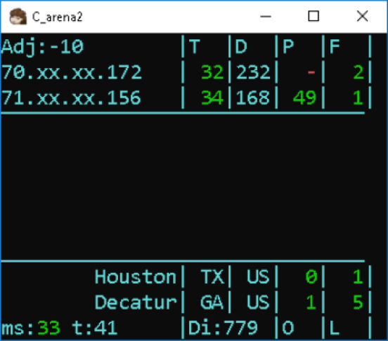

SableDetect
Join us on Discord

The tool to detect lagging players on Super Smash Bros Ultimate
Sable Detect is a windows based packet sniffer that is tuned to the SSBU protocol. It monitors incoming peer to peer traffic between 2 to 4 switches and keeps track of network flow for you. It checks for network instabilty, ping and more! The diagnostics it provides can help a TO or host determine who is the cause of the lag very quick and keep their event going smoothly!
Download